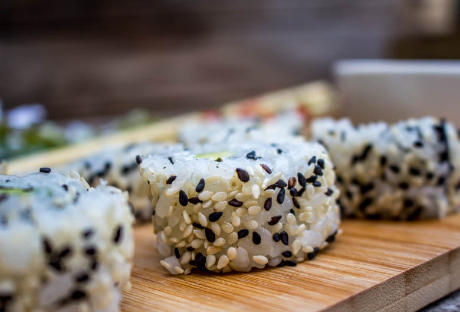
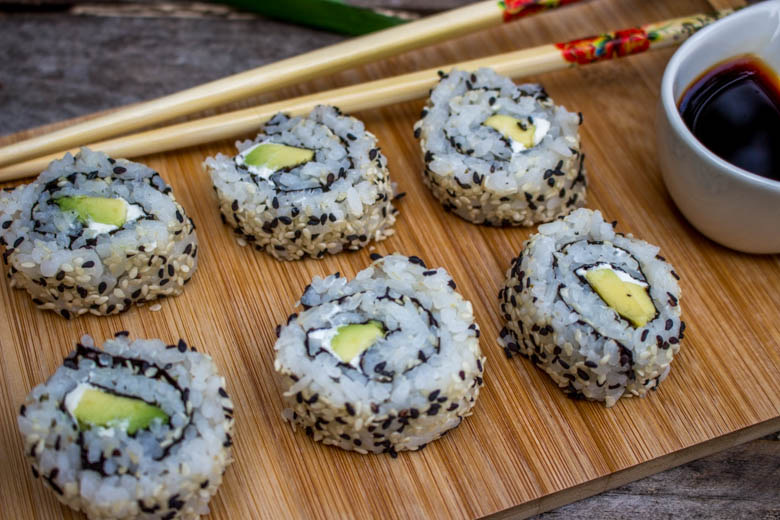

California rolls avocat cream cheese

Aujourd’hui c’est un autre rendez vous avec la cuisine Japonaise que je vous propose et notamment avec l’élaboration de california rolls avocat et cream cheese.
Les california rolls sont en réalité des makis « à l’envers ». Pour ceux qui ne connaissent pas les makis, il s’agit de feuilles de Nori (qui est une algue) entourant du riz vinaigré et une garniture pouvant variée selon les goûts de chacun. Généralement les makis sont garnis de poissons frais mais il en existe une grande variété.
Les california rolls contrairement aux makis ont la feuille d’algue à l’intérieur et le riz généralement garni de sésame à l’extérieur. Pour la petite histoire, pendant les années 70, un chef Japonais, en Californie a eu un jour l’idée de cacher la feuille de Nori afin de faire aimer ces makis aux Américains. Traditionnellement, les california rolls sont garnis de miettes de crabe, avocat et concombre mais aujourd’hui il en existe un grand nombre de déclinaisons.
Nous adorons aller au restaurant japonais mais c’est toujours un véritable plaisir de faire soi même ses california rolls et une fois que la technique est acquise ça va tout seul.
Je vous propose donc ma recette de california rollsavocat et cream cheese.
Ingrédients
- Eau - 300ml
- Riz à sushi - 300gr
- Vinaigre de riz assaisonné - 4 càs
- Avocat - 1
- Cream cheese - 200g
- Ciboulette
Instructions
- Laver le riz à l'eau claire.
- Dans un saladier, verser le riz dans un grand volume d'eau, l'eau va devenir blanche. Jeter l'eau puis renouveler l'opération jusqu’à ce que l'eau soit claire (environ 3/4 fois)
- Faire bouillir les 300ml d'eau dans une casserole.
- Quand l'eau bout, verser le riz, baisser le feu au minimum et couvrir
- Laisser cuire à couvert 15 minutes
- Quand le riz est cuit verser 4 càs de vinaigre de riz.
- Bien mélanger le riz et laisser refroidir
- Éplucher et couper l'avocat en tranches dans le sens de la longueur
- Dans un bol mélanger le cream cheese et la ciboulette puis réserver
- Recouvrir de film étirable le bambou (facultatif mais bien plus hygiénique)
- Déposer la feuille de Nori (je découpe 1/4 de la feuille de Nori car celles que j'achète sont à mon goût trop grandes et les california bien trop gros)
- Tremper les mains dans l'eau et prendre une poignée de riz (mieux vaut en prendre pas beaucoup que trop car on peut réajuster après)
- Partir du bord et étaler le riz avec les mains sur la feuille de Nori.
- Si vous n'en avez pas pris assez, boucher les trous
- Saupoudrer le riz de graines de sésame
- Retremper les mains dans l'eau pour vos débarrasser des grains de riz collés et retourner la feuille d'algue
- Placer votre garniture sur le bas de la feuille d'algue et sur toute la longueur Je crois que j'ai oublié la ciboulette ce jour la^^
- Commençons le "pliage"
- A l'aide du "bambou" rouler la feuille de Nori en serrant fort
- Placer au frais le temps de faire les suivants




Les tips de la communauté
Les California Rolls reçoivent des commentaires positifs sur la technique de réalisation et l'association avocat-cream cheese. Les lecteurs apprécient le concept.
Astuces
- Bien humidifier les mains pour manipuler le riz facilement
- Utiliser des ingrédients de bonne qualité pour un meilleur résultat
Variantes suggérées
- Ajouter d'autres fruits de mer ou légumes frais
- Servir avec différentes sauces d'accompagnement